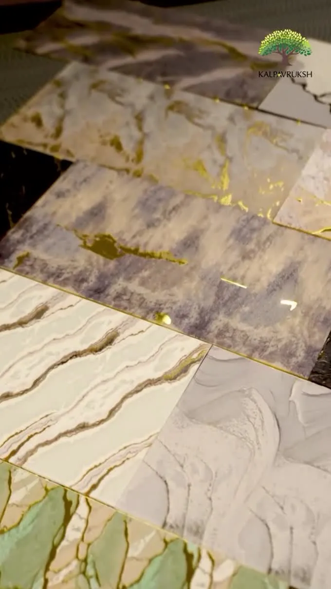
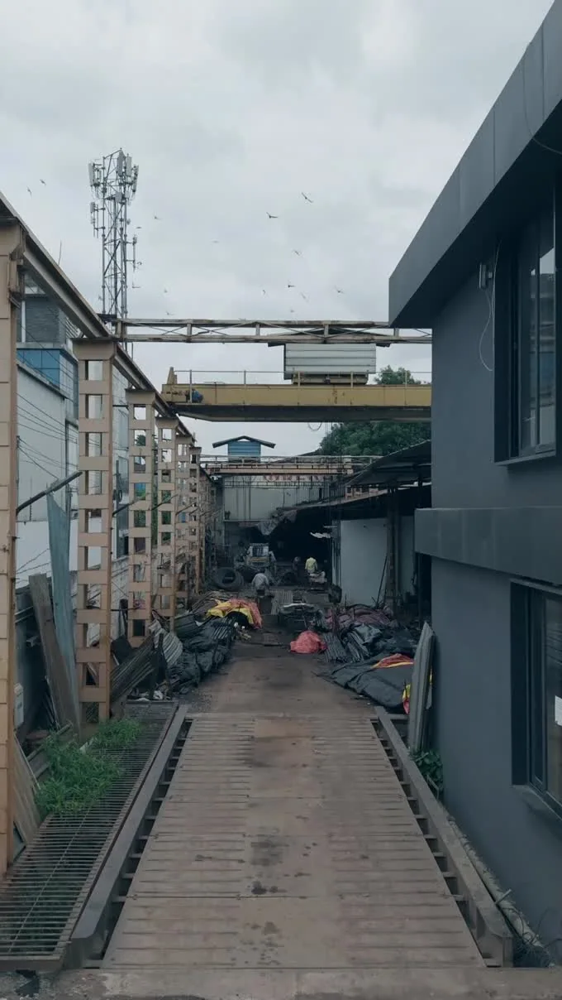

Understand the audience.
Find the real buyer, decision-maker, cultural context and reason to pay attention.
MARKETING STRATEGY / CREATIVE DIRECTION / BRAND BUILDING
I'm Mayank Raj — a marketing professional and agency founder developing audience-led content strategies across startups, interiors, materials and B2B businesses.
This portfolio is about the decisions behind the work: the insight, the creative format, and how each idea was brought to life.

01 / CONVERSATIONS
02 / INDUSTRIAL STORIES01 / SELECTED THINKING
Five different business challenges. Five distinct approaches. Explore what I noticed, how I shaped the content, and the work that followed.
02 / MY APPROACH
Find the real buyer, decision-maker, cultural context and reason to pay attention.
Choose an editorial device that belongs to the brand: a dialogue, a founder's voice, a heritage film or a practical series.
Connect creative execution to the audience journey and review the available response without overstating attribution.
03 / MORE BRAND STORIES
Filter by marketing discipline, then open any brand for the thinking, relevant films and contextual account material.
From London to the front lines of consumer brands — a history of guiding high-growth companies through strategy, content, and execution.
End-to-end creative campaigns, identity architecture, and high-retention reel pipelines for 10+ consumer brands in lifestyle, ayurveda, and hospitality.
Designed the 2–4 km radius hyperlocal consumer acquisition framework. Orchestrated community activation, localized content formats, and viral neighborhood adoption.
Strategic direction for emerging D2C brands — naming, packaging design guidelines, and go-to-market storytelling.
Advanced studies in design methodologies, human-centered systems, and strategic innovation — London, United Kingdom.
05 / A LITTLE ABOUT ME
I work at the intersection of commercial understanding, creative direction and practical marketing. I founded Bigshot Digital Solutions in India and am pursuing an MSc in Business Intelligence & Digital Marketing at Brunel University London.
I'm particularly interested in marketing teams that value sharp audience insight, original content formats and evidence-informed decisions.
Available for brand strategy direction, commercial video production, and high-stakes identity launches.